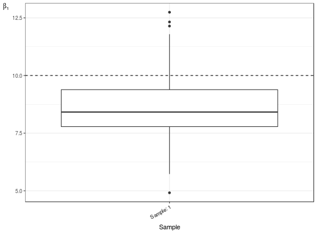

paramDistBoxplot returns a ggplot object with a
boxplot comparing the ntimes estimations of the chosen
parameter.
paramDistBoxplot(..., names.input = NULL, which.param = "beta1", sort.as.numeric = FALSE)
list of ExoData objects, or several
ExoData objects by themselves.paramDistBoxplot is going to create the
names as the names of the list when they are available or is going to
name them as Sample: 1 ,... , Sample: k."beta1" or
"beta2" that determines which paramters in the model
depth_i ~ uniquePos_i + width_i to plot. The default value is
"beta1".names.input are meant to be interpreted as numeric and sorted
accordingly.A ggplot2 object with the boxplot of the chosen
parameter
data(exoExample) paramDistBoxplot(exoExample)